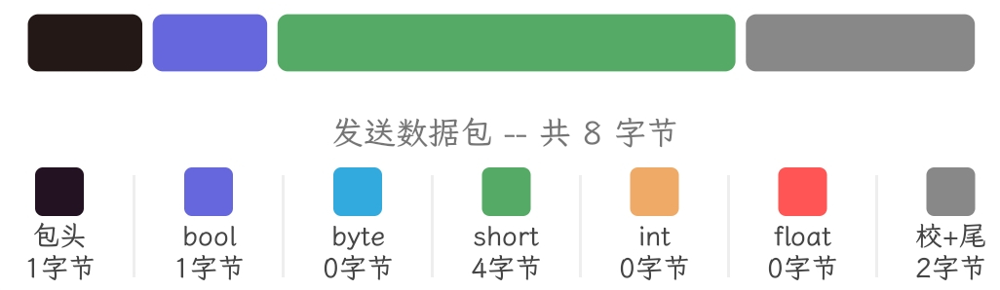
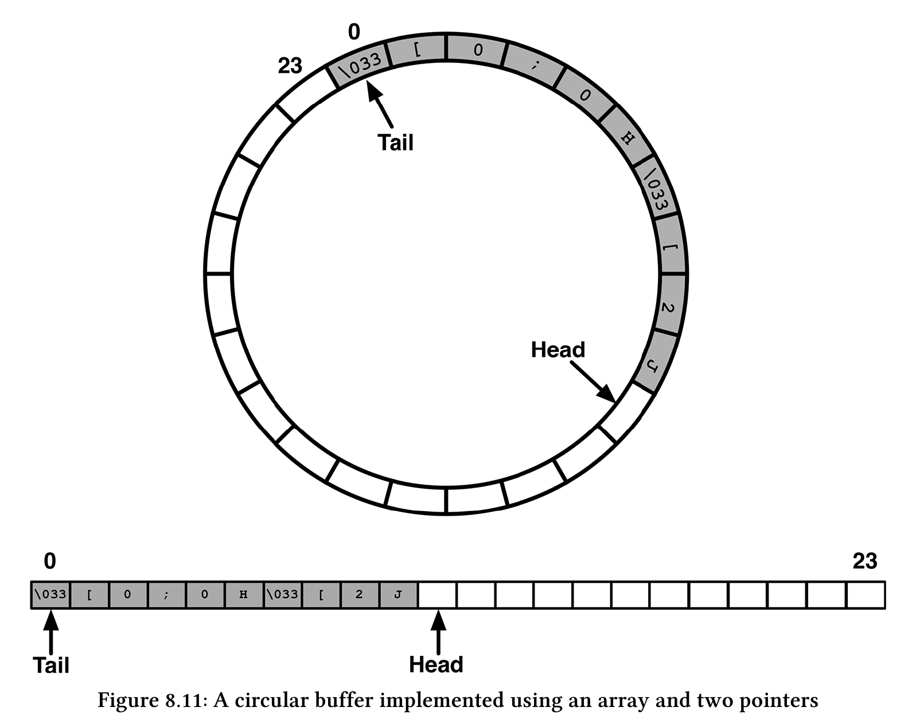

STM32裸机与FreeRTOS下串口协议选型与对比
用于调试的串口
当我们希望查看一些变量的值又不能使用调试器的时候，通常用printf将变量打印到终端查看，当目标设备是诸如STM32，Linux等设备时，我们与其交互的终端是通过UART串口通信实现的，所以需要通过重定义putchar函数将输出流重定向到串口。
先向include路径中加入gcc标准库路径，帮助LSP找到stdio.h头文件路径1
2
3
4
5target_include_directories(${CMAKE_PROJECT_NAME} PRIVATE
# Add user defined include paths
# 此路径取决于你安装的工具链，请自行查询工具链目录，找到含有stdio.h文件的目录。
/usr/arm-none-eabi/include
)
在usart.c末尾加入以下内容1
2
3
4
5
6
7
8
9
10
11
/* With GCC/RAISONANCE, small printf (option LD Linker->Libraries->Small printf
set to 'Yes') calls __io_putchar() */
PUTCHAR_PROTOTYPE {
HAL_UART_Transmit(&huart1, (uint8_t *)&ch, 1, HAL_MAX_DELAY);
return ch;
}
注意：printf在进行格式化时会消耗大量栈空间，这点当printf运行在FreeRTOS任务中时尤为重要。
用于数据传输的串口
1. HAL阻塞模式
1 | HAL_UART_Transmit(UART_HandleTypeDef *huart, const uint8_t *pData, uint16_t Size, uint32_t Timeout) |
此模式最简单也最容易理解，执行到此语句会等待发送或接收完成再继续执行，若发送或接收超过了所指定的Timeout时间也会接着执行后续程序。
若需要确保程序必须在接收或发送完成后再继续运行可将Timeout指定为HAL_MAX_DELAY。
在FreeRTOS中，你可以在一个任务中一直使用阻塞模式来接收数据，为了给其他任务腾出cpu时间，你必须增加适当的延时函数，在延时的时间内不会继续接收数据，从而出现丢数据的情况。
2. HAL中断模式
1 | HAL_UART_Transmit_IT(UART_HandleTypeDef *huart, const uint8_t *pData, uint16_t Size) |
通常情况下在发送时，阻塞模式和中断模式都会立即开始发送（中断发送时无其他更高优先级的中断），不同的是中断发送只是“通知“mcu在串口准备完毕时发送这串数据(UART_IT_TXE中断触发)，不会阻塞程序运行。
接收时，中断方式不再原地等待数据传入，而是继续执行接下来的程序，直到有数据传入触发中断，此时mcu将数据搬运进pData中。
在使用中断模式时，往往需要重写一些中断回调函数，常用的回调如下1
2
3
4
5
6
7
8
9
10
11// 此函数CubeMX会帮我们定义好，也不需要修改
// 调用路线 NVIC -> USARTx_IRQHandler -> HAL_UART_IRQHandler
void HAL_UART_IRQHandler(UART_HandleTypeDef *huart);
// 发送完成回调函数，由HAL调用，以下同理
void HAL_UART_TxCpltCallback(UART_HandleTypeDef *huart);
// 发送半完成
void HAL_UART_TxHalfCpltCallback(UART_HandleTypeDef *huart);
// 接收完成
void HAL_UART_RxCpltCallback(UART_HandleTypeDef *huart);
// 接收半完成
void HAL_UART_RxHalfCpltCallback(UART_HandleTypeDef *huart)
例程，代码片段，自行使用CubeMX初始化外设及中断服务：1
2
3
4
5
6
7
8
9
10
11
12
13
14
15
16
17
18
19
20
21
22
23
24
25
26
27
28
29
30
31
32
33
34
35
36
37
38
39
40
41
42
43
int8_t opt;
ITStatus UartReady = SET;
uint8_t readBuf = 0;
void HAL_UART_RxCpltCallback(UART_HandleTypeDef *huart) { UartReady = SET; }
void printWelcomeMessage() {
char *strings[] = {"\033[0;0H", "\033[2J", "Welcome Root", " /main ", ">"};
for (uint8_t i = 0; i < 5; i++) {
HAL_UART_Transmit_IT(&huart1, (uint8_t *)strings[i], strlen(strings[i]));
// 通过判断串口状态等待串口发送完成，有阻塞模式内味了
while (HAL_UART_GetState(&huart1) == HAL_UART_STATE_BUSY_TX ||
HAL_UART_GetState(&huart1) == HAL_UART_STATE_BUSY_TX_RX);
}
}
int8_t readUserInput() {
int8_t retVal = -1;
// 或许这一步可以放在中断回调函数中
// 在实时操作系统开发中，中断函数不应该占用过多的cpu时间，以免影响系统整体的实时性
if (UartReady == SET) {
UartReady = RESET;
HAL_UART_Receive_IT(&huart1, (uint8_t *)&readBuf, 1);
retVal = atoi(&readBuf);
}
return retVal;
}
// main() ...
printMessage:
printWelcomeMessage();
while (1) {
opt = readUserInput();
if (opt > 0) {
HAL_UART_Transmit(&huart1, "test", 4, 4);
if (opt == 3) {
goto printMessage;
}
}
// 使用中断发送的优势，此处可以运行其他程序
}
}
3. HAL DMA模式
直接内存访问（Direct Memory Access，DMA）是计算机科学中的一种内存访问技术。它允许某些电脑内部的硬件子系统（电脑外设），可以独立地直接读写系统内存，而不需中央处理器（CPU）介入处理 。在同等程度的处理器负担下，DMA是一种快速的数据传送方式。很多硬件的系统会使用DMA，包含硬盘控制器、绘图显卡、网卡和声卡
1 | HAL_UART_Transmit_DMA(UART_HandleTypeDef *huart, const uint8_t *pData, uint16_t Size) |
如果你不想深入了解DMA的底层原理（本篇不涉及，自己看书去），你要知道的是你可以无缝从中断模式切换到DMA模式，在CubeMX中配置好DMA后，只需将函数名中的IT替换为DMA即可，当然这样你无法体会DMA的强大之处
以上即为使用DMA接收定长数据的方式，下面简单介绍使用DMA接收不定长数据。
串口空闲中断(IDLE)，是会在串口接收完一帧数据后触发的中断，利用此特性，可在这帧数据接收完成后发起下一次接收请求。
HAL为我们提供了扩展函数，这样只需配置好DMA和中断，就很解决不定长数据的问题。1
2
3HAL_UARTEx_ReceiveToIdle_DMA(UART_HandleTypeDef *huart, uint8_t *pData, uint16_t Size) // 这里的Size参数似乎是DMA缓冲大小，官方说法是"Amount of data elements (u8 or u16) to be received."，一般填写接收数组的长度
// __HAL_DMA_DISABLE_IT(&hdma_usart1_rx, DMA_IT_HT);
// int main(void) ...
接着重写IDLE中断回调函数1
2
3
4
5
6
7
8
9
10
11
12
13
14
15
16
17// 再强调一遍，一定要注意中断回调占用的时间
void HAL_UARTEx_RxEventCallback(UART_HandleTypeDef *huart, uint16_t Size) {
if (huart == &huart1) {
// 在这里可以唤醒处理数据的程序了，这里以发送这串数据为例
// DataReady = 1;
HAL_UART_Transmit_DMA(&huart1, rev_data, Size);
// rev_data是接收数据存入的数组类型为uint8_t，大小自定
HAL_UARTEx_ReceiveToIdle_DMA(&huart1, rev_data, sizeof(rev_data));
// __HAL_DMA_DISABLE_IT(&hdma_usart1_rx, DMA_IT_HT);
}
}
void processData(void) {
if (DataReady) {
DataReady = 0;
do_something();
}
}
需要注意的是，在传输数据较长时，使用HAL_UARTEx_ReceiveToIdle_DMA函数不仅在传输完成时被调用，而且DMA在传输一半时也会调用，我们当然不希望处理一半的数据包，故可以选择性关闭传输过半中断(UART_DMARxHalfCplt)。1
__HAL_DMA_DISABLE_IT(&hdma_usart1_rx, DMA_IT_HT);
在FreeRTOS中接收和处理数据
有如下数据包

使用联合体定义如下1
2
3
4
5
6
7
8
9
10
11typedef union {
uint8_t data[8];
struct {
uint8_t head;
uint8_t status;
int16_t left_motor;
int16_t right_motor;
uint8_t parity;
uint8_t tail;
};
} UartRecvFrame;
定义数据处理任务1
2
3
4
5
6
7
8
9
10
11
12
13
14
15
16
17void uart_task(void *argument) {
/* USER CODE BEGIN uart_task */
UNUSED(argument);
BaseType_t xResult;
HAL_UARTEx_ReceiveToIdle_DMA(&huart2, recv.data, 8);
/* Infinite loop */
for (;;) {
xResult = xSemaphoreTake(uartIdleSemHandle, pdMS_TO_TICKS(300));
if (xResult == pdTRUE) {
printf("status=%d,left_motor=%d,right_motor=%d \r\n", recv.status,
recv.left_motor, recv.right_motor);
HAL_UARTEx_ReceiveToIdle_DMA(&huart2, recv.data, 8);
}
osDelay(5);
}
/* USER CODE END uart_task */
}
IDLE中断回调函数1
2
3
4
5
6
7extern UartRecvFrame recv;
void HAL_UARTEx_RxEventCallback(UART_HandleTypeDef *huart, uint16_t Size) {
BaseType_t xHigherPriorityTaskWoken = pdFALSE;
xSemaphoreGiveFromISR(uartIdleSemHandle, &xHigherPriorityTaskWoken);
HAL_UARTEx_ReceiveToIdle_DMA(&huart2, recv.data, 8);
portYIELD_FROM_ISR(xHigherPriorityTaskWoken);
}
开源组件库
LwRB
